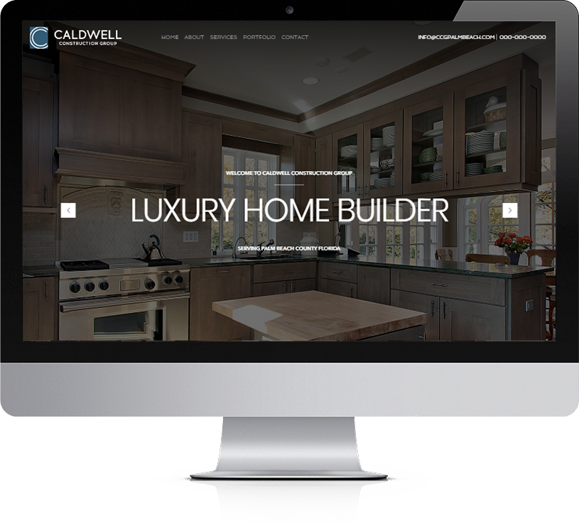
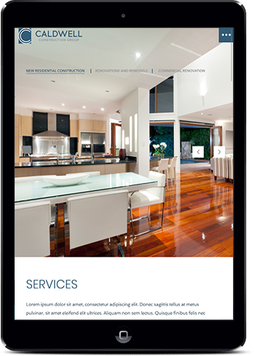
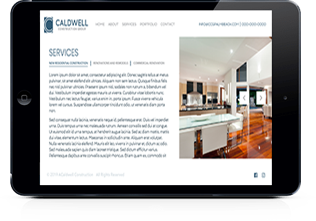
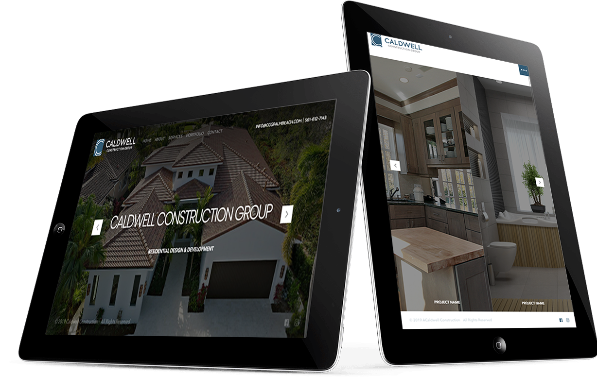
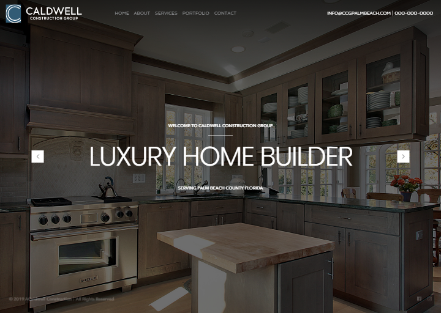
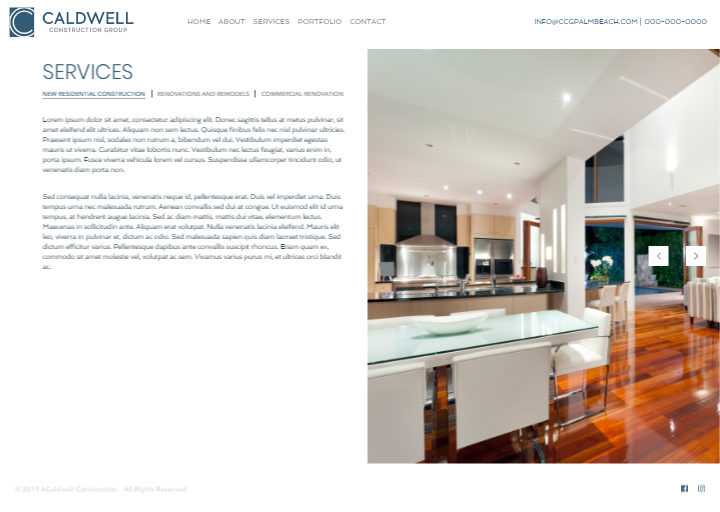
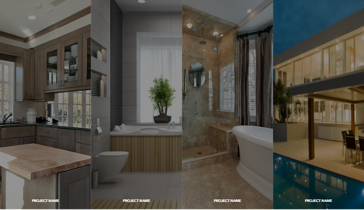
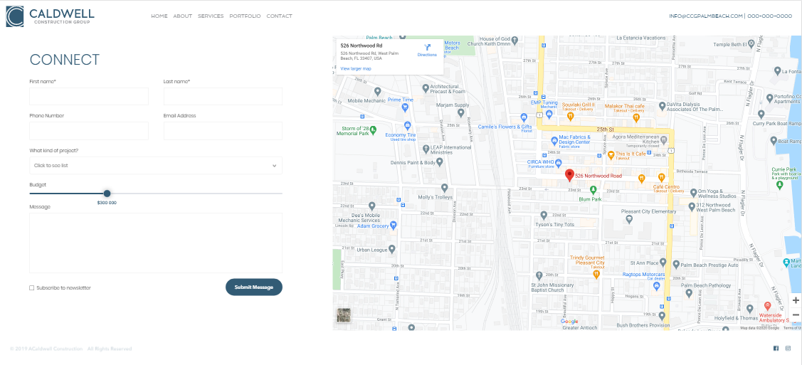

Caldwell Construction Group
Create an unusual design and a lot of different animations
Domain Area: Real Estate
Challenge: The customer wanted an unusual design and a lot of different animations on the site. All content should be manageable and site loading speed should be less than 2 seconds.




Solutions: We used jQuery and JavaScript to create an unusual design, which helped us to deliver dynamic pages and transition effects. We used Advanced Custom Fields for content management. Upon completion of the work, we optimized the site so that the loading speed was less than 2 seconds.

Technologies: WordPress, PHP, JavaScript, HTML, CSS, Advanced Custom Fields, ContactForm 7, jQuery, GTMetrix, GoogleSpeed



